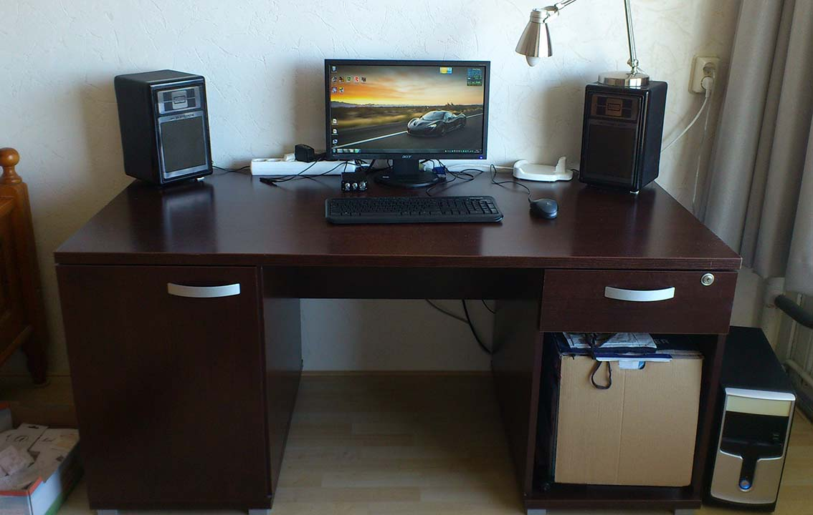

Battlestation
 In all it's glorious cheapness...
Specifications
| Part | Description | Price | other |
|---|---|---|---|
| PC | AsRock ConRoe945G-DVI Intel Core 2 Duo E4400 Sapphire HD 5850 Toxic | €115 | details |
| Monitor | Acer V203H | €40 | |
| Speakers | Philips | Found in the attic | |
| Amplifier | FeiXiang FX-152E | €20 | shop |
About
All parts were collected from 2013-2015 from used components, stuff from my parents' attic and DealExtreme. For work and study I have used a laptop for years, but gaming is not an option on that. Thus I created a challenge and fun project for myself: building a gaming PC for as little as possible. The result isn't amazing, but it does forfill my needs for now. Due to the aging Core 2 Duo CPU on a cheap motherboard, there's no upgrade path, but the benefit is the availability of cheap DDR2 RAM. Still, the Core 2 Duo is near the level of current entry-level Intel CPUs.
The GPU took a massive cut out of the budget at €45 (and even more if you include the need for a new PSU), but it's a great GPU for lower resolutions and older games. New it was worth €400 in 2010.